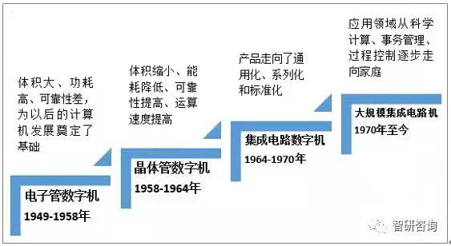
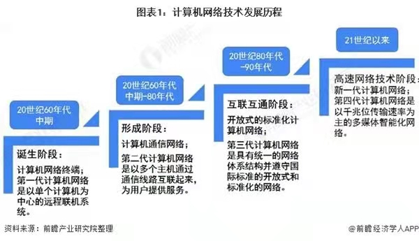
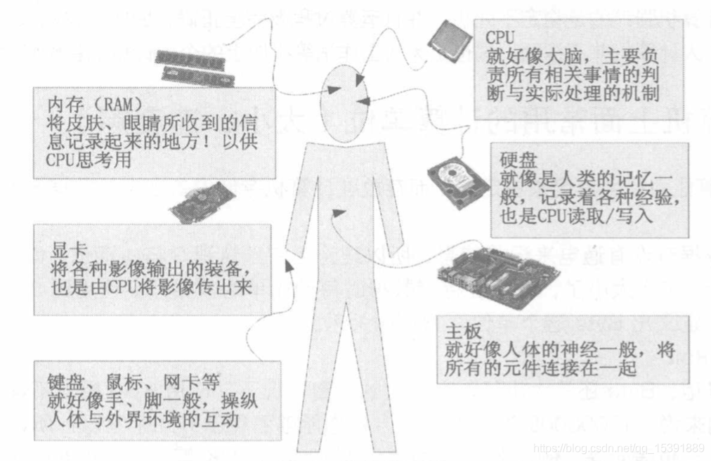

Here is a brief introduction to the development of Computer
计算机的诞生酝酿了很长一段时间。
1946年2月，第一台电子计算机ENIAC在美国加州问世，它是计算机的始祖，揭开了计算机时代的序幕。
计算机的发展到目前为止共经历了四个时代，从1946年到1959年这段时期我们称之为“电子管计算机时代”。
第一代计算机的内部元件使用的是电子管，主要用于科学研究和工程计算。
从1960年到1964年，由于在计算机中采用了比电子管更先进的晶体管，所以我们将这段时期称为“晶体管计算机时代”。晶体管比电子管小得多，不需要暖机时间，消耗能量较少，处理更迅速、更可靠。
从1965年到1970年，集成电路被应用到计算机中来，因此这段时期被称为“中小规模集成电路计算机时代”。
从1971年到现在，被称之为“大规模集成电路计算机时代”。第四代计算机使用的元件依然是集成电路，不过，这种集成电路已经大大改善，它包含着几十万到上百万个晶体管，人们称之为大规模集成电路和超大规模集成电路。
 How to create?
人可按如下方式大致类比计算机：
计算机硬件构成类比人体构造。具体地，心脏类比电源，是一切的动力之源；大脑类比CPU和硬盘，负责逻辑运算与存储，肢体、眼睛、耳朵、口等类比键鼠、摄像头、麦克风、音响等外围设备。
计算机软件则类比人类心理认知。具体地，操作系统是同一文化背景下的人群共有属性，应用系统类比个性。
计算机算法则类比于人类的逻辑算法，即人体如何根据外界环境做出相应的行为。
计算机网络则类比于人类的信息传递，即如何将信息传递到人体的各个部分，以及如何与外界沟通交流。
